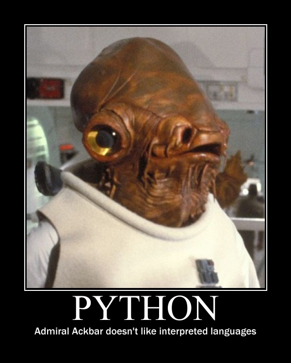

Rants from the Ballmer Peak 
The sweet trap of dynamic languages and development time
Recently Facebook announced Hack, a new programming language for HHVM. You can read the post yourself, but the summary is they are adding optional static typing to the PHP language, transforming it in the process. The concept is not exactly new, if you like the Python programming language but require more performance, you can migrate your code to Cython. In both Hack and Cython, final performance is important. If your PHP-like web framework is 100 times faster than Ruby on rails it means that when you want to scale you need 1/100th of the hardware resources. Anything multiplied by 100 in the scale of Facebook is a lot of money. It's a great deal even if it was only 10 times better.
I know Python very well, and I know Cython as well because I searched for it when I realised how piss poor Python is in terms of computation. If you read Cython's submitted claims of "my program went faster by 100 times!", well, they might be true. In my particular case I was processing graphic images with the Python Imaging Library and required pixel buffer access. Switching to Cython made my little script change from taking 15 minutes to 30 seconds just by virtue of adding a few type definitions here and there. No algorithm change. Also, no matter how much I attempted to optimize the python version I wouldn't even reach close to the improvement of Cython.
At that point I really felt back stabbed. I really liked the language: it was easy to write, fast to develop, source code looked very good. But it failed to deliver. Once I started maintaining large Python source code bases I realised dynamic languages have other traps, like refactoring time and necessary unit testing afterwards, or higher quality requirements for documentation because the programming interface tells you nothing (oh, give me an integer, or a string, or whatever you want, I'll just crash and burn later!).
Performance gains are clear for entities of Facebook scale, but most small or middle size shops may have other pressing issues like time to market, so they choose quick development languages. Do dynamic languages scale? I don't think so, using a dynamic language means that you are only delaying the development cost. Let me explain how.
The trap
Using a dynamic language is like the dark side of the force. Always luring, always tempting. It's easy! It's fast! It's simple! But when your software starts to grow, and you start adding new people to a team, the software crumbles and the dark side enrages you. Suddenly you start devoting an increasingly larger percentage of time to unit testing and fixing your own mistakes. Mistakes which could have been caught if the language didn't make them so easy to do. Mistakes which happen because the API you wrote, you wrote it for yourself, and when somebody else looks at it, he may have a different opinion on how to use it. Did you write proper documentation? Did you write unit testing for all logic paths? Did you check all parameter inputs to see if they are the correct type?
Much of this is done by a statically compiled language compiler, so instead of unit testing that you are passing a string where you expect there to be an integer, you can unit test real actions done by the user. It's no coincidence that if you look at programming languages, the more unit testing a programming community does (and even prides itself on doing!) the worse the language is at being statically analyzed. Why require programmers do trivial unit testing when the machine could do it for you?
The most irritating feature of dynamic languages is that it is really hard to write well behaved deterministic code if you are a library developer. See this little snippet:
- (NSURL*)shortestURL:(NSArray*)urls { if (urls.count < 1) return nil; if (urls.count < 2) return urls[0]; NSURL *url = urls[0]; NSUInteger len = [[url absoluteString] length]; for (int i = 1; i < urls.count; i++) { NSURL *test = urls[i]; if ([[test absoluteString] length] < len) { url = test; len = [[test absoluteString] length]; } } return url; } - (void)testShortestURL { NSLog(@"shorty is %@", [self shortestURL:@[ [NSURL URLWithString:@"http://www.google.es"], [NSURL URLWithString:@"http://google.es"]]]); }
If you wonder why I chose Objective-C, it's because it is a compiled language, but it behaves like a dynamic language where any object can be anything at any point of time during runtime execution, and for this reason the compiler can't help you. How can this method crash?
- Instead of passing an NSURL, pass an array of NSString objects. It happens to me a lot of times. Just reading the API doesn't tell you the type of the objects stored in the array. That leads to Objective-C code specifying the type of parameters in the method name, increasing verbosity.
- If you pass an array with a single string, it works! The
shortestURLmethod could be renamed tomagicallyTransformMyTypes, since the compiler will treat the passed NSString as a returned NSURL, likely ending in a selector crash later when the ninja NSURL object is accessed. - Being pedantic, you can't even be sure that the
urlsparameter is an NSArray. Some JSON code I've seen presumes that the parsed input will return an array, but the JSON could be storing a dictionary. Granted, this is a problem of input validation, but still it happens because most JSON libraries return anidobject instead of an explicit NSDictionary or NSArray, because they don't want to check the type themselves either, leaving the burden on the programmer.
What happens is that a lot of library code ends up with many useless tests to verify that nothing has gone wrong. The language forces you to do the work a compiler would do. Let's see another example in Python:
#!/bin/usr/env python class MyFailure: def __init__(self, age, name, language): self.age = age self.name = name self.language = language def sayHello(self): print "I'm %s, age %d, and speak %s" % (self.name, self.age, self.language) rick = MyFailure("Rick", 23, "English") rick.sayHello()
If we try to run this code we get:
$ python t.py
Traceback (most recent call last):
File "t.py", line 14, in <module>
rick.sayHello()
File "t.py", line 11, in sayHello
self.age, self.language)
TypeError: %d format: a number is required, not str
The failure is evident, the first parameter to the convenience constructor should be the age and not the name. The number 23 is assigned to self.name and the string Rick is assigned to self.age. Hilarity ensues. In a typed language, like C or C++, the compiler is able to scan the format string and detect that you are passing the wrong type. But this is not possible in Python because there is no static type information. This is such a pain that when I write Python code the first line of the docstring is the signature of the method with the parameter names replaced as types. Example:
class MyFailure: def __init__(self, age, name, language): """f(int, string, string) -> MyFailure blah blah blah """ self.age = age self.name = name self.language = language
Yes, I specify the returned object because you can't be sure either. In Python you can return different types, which is even more fun for programmers calling such functions. Another case of the programmer hand holding the language. It gets better, though. As user code you can write foo = rick.name to get the name of the object. What happens if I upgrade the object and rename name to firstName and add a lastName? All the places using the old name field name will fail. But you won't know until you try. Suddenly when you write code for others you are a prisoner of your initial design, and trying to evolve it is painful process.
And if you think this is something which is in your hand, think again. When you write your script and distribute it alone, you are depending on the destination machine/environment to have exactly the same version of the software as you had. This hypothetical other machine could have a different version of one of the modules you use which introduce subtle little bugs, or directly throws exceptions. Talking about exceptions, in dynamic languages you can't be sure either, everything can throw an exception at any moment. In statically compiled languages you can indicate that no exceptions have to be thrown, and if a library you use starts to throw a new one, the compiler will not compile your code until you handle the new exception. Good luck unit testing your software with every possible 3rd party library version forever.
These problems with dynamic languages highlight again why unit testing is precious: the programming language is forcing you to be the compiler. Why are firms like Facebook adding type information to a dynamic language rather than writing a static analyzer tool to solve these issues? Surely for such code it would be possible to detect field renames or infer the appropriate types?
Look at the Shed Skin experimetal Python to C++ compiler. You read "Oh, a typical speed up of 2-200 times over CPython" (that is the normal interpreted Python, has no relation to Cython) and start rubbing your hands. But then you look at their progress blog posts and realise it is not a valid solution when it takes 2 minutes to analyze a 3000 line program. Or the fact that this is a restricted version of Python, not every Python code can be ported. Analyzing dynamic language source code to infer the types tends to produces an explosion in compilation time the more complex the source is. There is progress dealing with that, like the Shed Skin compiler shows, but it is still far away from being usable in production.
The middle ground
Languages like C++ are not the solution, and dynamic languages end up disappointing when you grow past single programmer code. Isn't there a middle ground? There is: instead of patching and old decrepit corpse, start from zero using what you have learned. Start using the Nim programming language, which would look like this for the previous examples:
import uri, strutils proc shortestURL(urls: seq[TUrl]): TUrl = if urls.len < 1: return TUrl(nil) if urls.len < 2: return urls[0] var url = urls[0] length = len($url) for i in 1 .. <urls.len: let test = urls[i] if len($test) < length: url = test length = len($test) return url proc testShortestURL() = echo "shorty is ", shortestURL(@[ TUrl("http://www.google.es"), TUrl("http://google.es")])
This version in Nim is not very idiomatic (e.g. it does not use the implicit result variable), but on top of offering a much cleaner syntax, this version has the advantage of the compiler doing its work: you can't pass an array of strings instead of an array of TUrl objects. If you try you get:
urls.nim(23, 32) Error: type mismatch: got (seq[string]) but expected one of: urls.shortestURL(urls: seq[TUrl]): TUrl
The other derived problems from the lack of types of the Objective-C version also disappear in Nim. Let's compare to the python snippet:
import strutils type MyFailure = object age: int name: string language: string proc initMyFailure(age: int, name, language: string): MyFailure = result.age = age result.name = name result.language = language proc sayHello(self: MyFailure) = echo "I'm $1, age $2, and speak $3" % [ self.name, $self.age, self.language] var rick = initMyFailure("Rick", 23, "English") rick.sayHello()
That looks very close to Python, doesn't it? The differences are:
- You define the class in a separate
typesection. The methods (called procs in Nim) are defined outside. - Like in the previous example, passing the wrong types as parameter won't compile:
failure.nim(18, 24) Error: type mismatch: got (string, int literal(23), string) but expected one of: failure.initMyFailure(age: int, name: string, language: string): MyFailure
In Nim there is no string formatting which also converts types on the fly. This is a source of bugs, so you are forced to convert all the parameters to strings, hence the usage of the
$operator to convert the integer to a string. If you forget about this, the compiler will remind you:failure.nim(16, 19) Error: type mismatch: got (int) but expected 'string'
It cracks me up that one of the Python mantras is "Explicit is better than implicit", yet the whole language is implicit about types, so you can pass anything as a string and it will get formatted. You may not get the output you expected, but hey, that's a feature!
- If you rename the field to something else, the compiler won't compile anything until you fix all the places trying to use it. Same thing with exceptions, in Nim you declare a proc raises none or a number of exceptions through the raises pragma and don't worry if a 3rd party library changes the exceptions it raises.
- Writing Nim code is not that much different from the Python version. Note how the
var rickline does not specify the type. This reduces source code noise. You can also useletinstead ofvarto declare a variable which can't change. There is no concept ofletor const in Python.
Conclusion
Nim is very close to a friction free dynamic language in terms of source code writing ease, but it is very performant and sane at the same time. The advantage of using Nim is obvious: you invest only a little bit more of time starting a program with Nim due to type declarations and making sure the compiler likes them. But as time goes by you start to reap the rewards compared to dynamic languages. On the other hand, if you start with a dynamic language you are very productive in your first days but on the long run you are plagued with other problems which offset that initial performance boost.
Yes, sure, "it's only for a little script". Haven't you heard of the typical program written in Visual Basic 6 which is still in use and the company depends on? Dynamic languages might be more tempting to write something quick and easy, but you are risking a lot by doing so. Success can't be killed, yet it may kill you.
$ nim c -r conclusion.nim
conclusion.nim(27, 33) Info: instantiation from here
conclusion.nim(23, 6) Error: can raise an unlisted exception:
ref SilentNinjaBreakerOfProductionCode